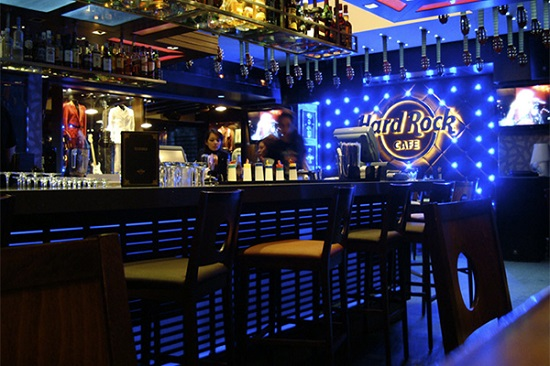
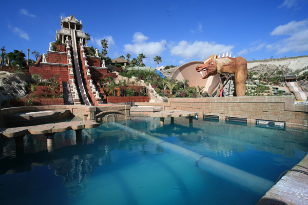

Eetgelegenheden
De gezelligste plaats om in playa de la Américas iets te gaan eten is alvast aan de “licht- en muziekfontein”. Dit is een grote fontein waarrond enkele restaurants en winkelstraten liggen. Het is zowel overdag als 's avonds een aangename plek om te eten maar wij raden aan om zeker eens te gaan kijken om 20 uur 's avonds, de fontein danst op dat uur op de klassieke muziek die er dan gespeeld wordt.
Het Italiaanse restaurant “ Bianco ” en het Thaïse restaurant “Tai-Pan ” zijn zeer lekkere restaurants en zijn niet duur. De fonteinen liggen in het centrum en op een wandelafstand van 5 minuten van het strandhuisje.
Bars
U zal veel verschillende bars tegenkomen als u richting het centrum wandelt maar indien u zin heeft in een lekkere cocktail is het bij de Monkey Bar te doen! Deze bar ligt recht achter het complex en is een echte aanrader voor op een hete dag iets fris te drinken. Voor 's avonds is het echt de moeite om het Hard Rock Café van Tenerife te bezoeken. Dit Café ligt over de 'licht- en muziekfontein' en heeft niet alleen leuke drankjes, er worden ook shows gegeven van dansers en muziekbanden.
Dieren- en pretparken
In Tenerife zijn er dieren- en pretparken in overvloed. Zowel jong als oud kan zich hier amuseren. Voor gezinnen met kinderen zijn het Jungle Park (dierenpark) en Aqualand (waterpretpark) zeer aan te raden en het Siam Park is een waterpretpark voor alle leeftijden. De parken zijn te bereiken met de bus of de taxi en zijn tussen de 5-15 minuten rijden. De ticketten kan u bij de parken zelf of met korting in een winkel naast het strandhuisje kopen.